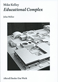
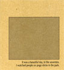
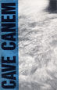

2015 Mike Kelley: Educational Complex, Afterall Books: One Work, London |
2013The Ruin of Exchange And Other Writings on Art, edited by Alexander Alberro, JRP-Ringier, Zurich and Les presses du réel, Dijon |
2010XXX Macarena: Performance, Kunsthalle Zürich, 28. August 2009 (Jutta Koether, John Miller and Tony Conrad), 12” vinyl record, 41:54 min., From the Nursery/Primary Information, New York |
2009Selling Short: XXX Macarena (Jutta Koether and John Miller), Import series audio CD, MFC–Michèle Didier, Brussels and Les presses du réel, Dijon Shooting Log, MFC–Michèle Didier, Brussels |
2008
Between Artists: Maria Eichhorn/John Miller, A.R.T. Press, New York |
2006In Person: Robot, audio CD, North Drive Press, New York |
2005“493 KB,” Next Level: if..., no. 7 (Edition 1, vol. 4) Bluesmodernist Ltd., London: pp. 112-115. (ill.) Something for Everyone (video, 29:24 min. with Richard Hoeck), Hoeck–Miller–Riff Productions, Vienna |
2004
|
2003Fatalism and Fun, Support Agentur, Berlin “Traces of Corporeality in the Ramble,” (with Robert Nickas), Into the Abyss (Spring), Powerhouse Books, New York pp. 20-25; republished in Bob Nickas, Theft Is Vision, JRP-Ringier & Les Presses du Réel, Zurich and Dijon, 2008, pp. 42-52. |
2001
|
2000Wake-Up Time (with Takuji Kogo), Neuer Aachener Kunstverein, Aachen |
1997
|
1996 |
1995"Art as Discourse," Sprechen ¸ber Kunst, |
1986The True Voice, Benjamin Weissman (ed.), Storytellers, vol. 1, Foundation for Art Resources (F.A.R.), Los Angeles 1986; excerpted in Ferro Botanica, no. 4, Steel Garden Press, Hoboken, p. 59–70. |
1982 Real Life Magazine, New York, Spring–Summer, p. 22–24 and Barney, Fred & Barney Press, no. 3, Los Angeles 1983, pp. 28-30. |
1981Mixup, 45 rpm vinyl disc (face 1: Mixup, face 2: Hi Sheriffs of Blue), Tweet Records, New York; excerpt face 1: Mixup included in Tellus, no. 7., audiocassette. |
1980
|
1979Cinematic Moments, New York: self-published. |